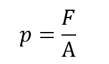
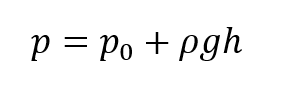
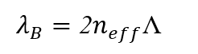
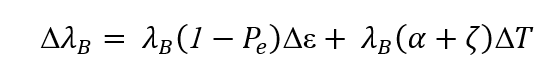

Undergraduate Thesis · University of Indonesia & BRIN
Design of a Hydrostatic Pressure Sensor System
for the Epipelagic Zone using Fiber Bragg Grating
and 304 Stainless Steel Diaphragm
R. K. Arief, R. W. Purnamaningsih, M. Hamidah — Published: Springer Lecture Notes in Electrical Engineering (LNEE), Proceedings of ICNERE 2026, Hamamatsu, Shizuoka, Japan. Full experimental results and data are available in the published paper.
Background & Motivation
Why Hydrostatic Pressure Monitoring in Indonesia?
Indonesia — the world's largest archipelagic state — has a coastline exceeding 108,000 km and sits at the convergence of three major tectonic plates: the Indo-Australian, Eurasian, and Pacific plates. It records over 320 earthquakes of magnitude ≥ 5.0 annually, most originating at shallow depths below 70 km, making coastal areas highly vulnerable to tsunamis.
The Java Sea — one of the broadest shallow marine areas in Indonesia — has an average depth of 40–46 m, with over 65% of the region shallower than 50 m. This places it squarely in the epipelagic zone (0–200 m), which supports both marine biodiversity and critical maritime activities.
To address tsunami threats, Indonesia implemented the Tsunami Early Warning System (TEWS) in 2006, managed by BRIN. A recent advancement is the Ina-CBT (Indonesia Cable-Based Tsunameter), deployed in Labuan Bajo since 2022, using Ocean Bottom Units (OBUs) equipped with quartz-based Bottom Pressure Recorders (BPRs) and MEMS tri-axial accelerometers.
Fiber Bragg Grating (FBG) sensors directly address these limitations. They are inherently immune to EMI, resistant to corrosion, capable of distributed multi-point sensing along a single fiber, and seamlessly integrate with optical fiber communication networks without disrupting data transmission.
This research proposes a laboratory-scale FBG pressure sensor using a 304 stainless steel circular diaphragm as the transduction element. The stainless steel 304 alloy was selected for its yield strength of 215 MPa and robust corrosion resistance — ideal for shallow marine deployment. The sensor targets pressure conditions equivalent to ~48.7 m depth (5 kg/cm²), reflecting the average depth of Indonesia's coastal waters.
Theory
Fiber Bragg Grating — Operating Principle
A Fiber Bragg Grating (FBG) is formed by inducing periodic variations of the refractive index along the core of a single-mode optical fiber using UV laser exposure. This periodic structure selectively reflects a narrow wavelength band — the Bragg wavelength λB — while transmitting all other wavelengths.
When the fiber experiences mechanical strain or temperature change, both the grating period Λ and the effective refractive index neff shift, causing a measurable change in λB. This wavelength shift is the fundamental measurable quantity in all FBG sensing applications.
This research uses a Uniform FBG (UFBG) inscribed on SMF-28e single-mode fiber — the most common configuration, producing a sharp, symmetrical reflection peak. The FBG is bonded at the centre of the stainless steel diaphragm; pressure-induced diaphragm deflection creates axial strain on the FBG, shifting λB. Because experiments were conducted at stable 25 °C, temperature effects are negligible and the shift is attributed entirely to mechanical strain.
| FBG Sensor Parameter | Specification |
|---|---|
| Fiber type | SMF-28e single-mode optical fiber |
| Bragg wavelength (λB) | 1550.056 nm |
| Bandwidth (3 dB) | 0.18 nm |
| Reflectance | 90.55% |
| Grating type | Uniform FBG (UFBG) |
| Interrogator | I-MON 512 USB, detection range 1510–1595 nm |
| Interrogator resolution | < 0.5 pm |
| Diaphragm material | 304 Stainless Steel (E = 193 GPa, ν = 0.29) |
| Diaphragm diameter | 60 mm |
| Diaphragm thickness | 2 mm |
| Target pressure | 1–5 kg/cm² (~10–48.7 m depth) |
Analytical Framework
Mathematical Analysis
The sensor's transduction chain is fully described by combining hydrostatic pressure theory, Kirchhoff-Love plate theory for clamped circular diaphragms, and FBG photoelastic sensing equations. All equations below are from the published paper.
Hydrostatic Pressure

Fluid Pressure
Pressure defined as the ratio of normal force to area. SI unit: Pascal (Pa).
p = pressure · F = normal force · A = area [16]

Hydrostatic Pressure at Depth
Total pressure at depth h in a static fluid column.
p₀ = atmospheric pressure · ρ = fluid density · g = gravitational acceleration · h = depth [16]
Fiber Bragg Grating Sensing Equations

Bragg Condition
Defines the reflected wavelength. Reflection occurs when incident light satisfies this resonance condition.
λB = Bragg wavelength · neff = effective refractive index · Λ = grating period [22–30]

Bragg Wavelength Shift — Full Form
General shift equation accounting for both strain and temperature. The first term is mechanical (strain), the second is thermal.
Pe = photo-elastic coefficient · Δε = axial strain · α = thermal expansion · ζ = thermo-optic coefficient · ΔT = temperature change [31–35]
Isothermal Bragg Wavelength Shift
Simplified from Eq. 4 when ΔT = 0. Applied directly in this experiment at stable 25 °C — shift is attributed entirely to mechanical strain.
Pe = effective photo-elastic coefficient · Δε = axial strain in fiber [31–35]
Kirchhoff-Love Plate Theory — Circular Diaphragm

Radial Curvature
Principal curvature in the rz-plane under small deflection assumption.
rn = radial radius of curvature · w = deflection · φ = slope angle [36]

Tangential Curvature
Second principal curvature oriented tangentially along the diaphragm surface.
rt = tangential radius of curvature · φ = dw/dr = local slope [36]

Bending Moments (Cartesian)
Moments acting on an infinitesimal plate element along x and y axes. Forms the basis for deriving polar bending moments.
D = flexural rigidity · ν = Poisson's ratio · rx, ry = radii of curvature [36]

Bending Moments (Polar)
Radial and tangential bending moments per unit length in polar coordinates. In the clamped condition, Mt = 0 at r = 0 and r = a.
Mr = radial moment · Mt = tangential moment · φ = dw/dr [36]

Flexural Rigidity
Governs the diaphragm's resistance to bending. A key material-geometry parameter in all plate deflection calculations.
E = Young's modulus · h = thickness · ν = Poisson's ratio [36]

Deflection Profile — Clamped Edge
Deflection w at radial position r under uniform pressure q. Maximum deflection at centre (r = 0): wmax = qa⁴/64D.
q = uniform applied pressure · a = diaphragm radius · D = flexural rigidity [36, 37]

Radial Strain at Diaphragm Centre
Strain at r = 0 — the exact location where the FBG is bonded. This strain is directly transmitted to the grating, driving the wavelength shift.
p = applied pressure · R = diaphragm radius · E, h, ν = material/geometric parameters
Pressure–Wavelength Transduction Chain

Bragg Shift from Applied Pressure
The core design equation — directly links applied hydrostatic pressure p to the measurable Bragg wavelength shift ΔλB. Derived by substituting Eq. 15 into Eq. 5.
Combines FBG photoelastic response with Kirchhoff-Love plate mechanics [31–37]
![p = (Δλ_B / λ_B) · 8Eh² / [3(1-Pe)(1-v²)R²]](eq_p_from_dlambda.png)
Pressure Recovery from Wavelength Shift
Inverse of Eq. 16 — allows the sensor to directly compute applied pressure from a measured ΔλB. This is the operational equation for pressure readout.
All quantities measurable or characterised through calibration
Steady-State Analysis

References
Bibliography
- A. Rosyidie, "Dampak Bencana Terhadap Wilayah Pesisir," Jurnal Perencanaan Wilayah dan Kota, vol. 17, no. 3, pp. 63–81, Dec. 2006.
- M. Hutomo and M. K. Moosa, "Indonesian Marine and Coastal Biodiversity: Present status," Indian J Mar Sci, vol. 34, no. 1, pp. 88–97, 2005.
- S. J. Hutchings and W. D. Mooney, "The Seismicity of Indonesia and Tectonic Implications," Geochemistry, Geophysics, Geosystems, vol. 22, no. 9, Sep. 2021. doi: 10.1029/2021GC009812.
- M. A. Purwoadi et al., "Introduction to Indonesian Cable-based Subsea Tsunameter," IEEE UT 2023. doi: 10.1109/UT49729.2023.10103368.
- S. Xu et al., "Fiber Bragg grating pressure sensors: a review," Optical Engineering, vol. 62, no. 01, 2023. doi: 10.1117/1.oe.62.1.010902.
- J. Walker, D. Halliday, and R. Resnick, Fundamentals of Physics, 10th ed. Wiley, 2014, pp. 386–405.
- N. A. Madani et al., "Detection of Low Hydrostatic Pressure Using Fiber Bragg Grating Sensor," Int. J. Technology, vol. 14, no. 7, pp. 1527–1536, 2023. doi: 10.14716/ijtech.v14i7.6714.
- C. E. Campanella et al., "Fibre Bragg Grating Based Strain Sensors: Review of Technology and Applications," Sensors, 2014.
- C. Li et al., "Diaphragm FBG pressure sensor for high precision measurement in low pressure environments," Optical Fiber Technology, vol. 87, 2024. doi: 10.1016/j.yofte.2024.103917.
- S. Timoshenko and S. Woinowsky-Krieger, Theory of Plates and Shells, 2nd ed. McGraw-Hill, 1959.
- A. C. Ugural, Plates and Shells: Theory and Analysis, 4th ed. CRC Press, 2018.
Full reference list (37 entries) and experimental results available in the published paper: Springer LNEE, Proceedings of ICNERE 2026, Hamamatsu, Japan.